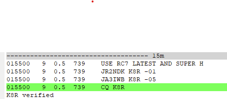

[
Date Prev
][
Date Next
][
Thread Prev
][
Thread Next
][
Date Index
][
Thread Index
]
[NCDXC Chat] USE RC7 ?
To
: 'Chat NCDXC' <
chat@ncdxc.org
>
Subject
: [NCDXC Chat] USE RC7 ?
From
: Steve Dyer W1SRD <
w1srd@yahoo.com
>
Date
: Wed, 10 Jul 2024 18:58:13 -0700
Dkim-signature
: v=1; a=rsa-sha256; c=relaxed/relaxed; d=yahoo.com; s=s2048; t=1720663099; bh=Ha863IXjV7zgIq2G5roqGp4SjEzAru/L7AkVkL+1j58=; h=Date:To:From:Subject:References:From:Subject:Reply-To; b=rpyJF1HYruEvOobBuX8aNu397gmcjYqgJmOd6lrTo/RUtlzhwIANaOt253BVOlHFFByYsvJ4I+EjpR62vnxwH3EEz6dqX+0/7SY8H2MYmib8RbLxCMULYRNY1UpEnmBH9L3fdX9dLYMDSLC5Nn0saH6LKuMqWfYzVSV1DKUSdw6KBJMIV6lZOG+3F2/NutbXeT3L1PePrWzus8kVb9e67aWP5fyEkkuTh0WXhAzmFI/4sOUnBGmvz4/AZFLIlhYDilb8/lA97aFQ4j0cEyt5iV+sfV6RHVtDy/Licm58/psWLWhhdiT6OoWmZQAAmRU42555TUxM9qgqKAkdUS8aYw==
List-archive
: <
http://mail.ncdxc.org/mailman/private/chat_ncdxc.org/
>
List-help
: <
mailto:chat-request@ncdxc.org?subject=help
>
List-id
: NCDXC Discussion List <chat.ncdxc.org>
List-post
: <
mailto:chat@ncdxc.org
>
List-subscribe
: <
http://mail.ncdxc.org/mailman/listinfo/chat_ncdxc.org
>, <
mailto:chat-request@ncdxc.org?subject=subscribe
>
List-unsubscribe
: <
http://mail.ncdxc.org/mailman/options/chat_ncdxc.org
>, <
mailto:chat-request@ncdxc.org?subject=unsubscribe
>
References
: <d551b134-85cb-46fe-bc36-e1e0421649db.ref@yahoo.com>
User-agent
: Mozilla Thunderbird

There is no such version that I can find.
Anyone?
One RR73 every 5 minutes so ~12/hour rate.
+12 dB here.
Follow-Ups
:
Re: [NCDXC Chat] USE RC7 ?
From:
Ed Radlo <eddrad@aol.com>
Prev by Date:
Re: [NCDXC Chat] DX Now- Here is your chance to see and try Super Fox and Hound
Next by Date:
Re: [NCDXC Chat] USE RC7 ?
Previous by thread:
Re: [NCDXC Chat] DX Now- Here is your chance to see and try Super Fox and Hound
Next by thread:
Re: [NCDXC Chat] USE RC7 ?
Index(es):
Date
Thread